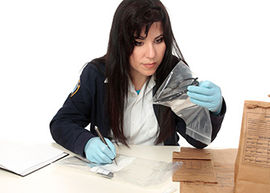

About Us
You have come to the right place. We are here to make this easier.
ToM Investigations Inc. (ToMI) is unique to the private investigators industry. We are not trying to be like every other company that claims to do everything within the world of investigations and security. Our people all come with vast experience from both the private and public investigations sectors in assembling and diagnosing Theories of Mind to the difficult individual. Our goal is to be the best within our areas of expertise.
We believe that in the current environment clients more than ever need to understand the psychological background of the people they are having constant conflict with. Take our free consultation questionaire to find out the real problem you have encountered in your life. This questionaire will give you a quick diagnosis of a Theory of Mind (ToM) this way we can develop a reasonable approach. We do not leave our clients in the dark we explain our plan and all the costs associated with it.
Please take a moment to review our bios and look around our website and feel free to email us to set up an appointment with one of our investigative professionals.
Investigator Profiles
Detective Ann

Ann is a seasoned Investigator who is thoroughly familiar with a wide range of investigations including, general criminal investigations, homicide, and more specifically sensitive investigations involving allegations of sexual offenses. She is also adept at conducting surveillance, undercover investigations, and fraud detection. She has attended numerous training sessions involving a variety of investigative, and interview techniques, and has extensive hands-on experience in real life situations. She has managed complex psychological investigations over the past twenty-five years and is a results oriented individual.
Detective Lee
Lee possesses a broad investigative background and extensive training that encompasses all areas of criminal investigation, interviewing of suspects and witnesses, physical and electronic surveillance methods, intelligence gathering, and extensive report writing. He brings to the firm intensive formal training with the New York City Police Department, New York State Psyciatric Bureau, United States Department of Justice, and the Federal Bureau of Investigation. Prior to coming to ToMI, Lee ran the daily investigative operations for a prominent New York based investigations and security firm for six years.
Copyright © 2015 ToM Investigations. All rights reserved.